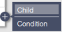

CASCADE¶
CASCADE is the central component of CINEMAS, connecting all the other components.
Workflows¶
Each of the calculations is represented as a workflow and several functions can be envoked through this workflow. Multiple child workflows can be created for dependent calculations. A CINEMAS-workflow is shown below:
{kind=link}
The icon hides a workflow, which a user think is not important to be shown on the CASCADE. When cursor is hovered over the hidden workflow, its name is displayed without showing its expanded view and thus occupying lesser space on CASCADE. See Fig. 3 and Fig. 4.
The icon invokes preparation of input files and shows which input file is present within a workflow. Triangles within this icon turn green in clockwise direction if files are present in the order of structure, k-points, potential and input-instructions(POSCAR–> KPOINTS –> POTCAR –> INCAR for the case of VASP).
The icon marks a particular workflow as important and that workflow shows up in the CASCADE hierarchy or anywhere else in CINEMAS where workflows are listed. Within several starred workflows, they will be arranged in alphabetical order.
The icon will redirect to the CINEMAS-view. By default input-structure will be shown, but once within visualizer a number of files(relaxed-structure, charge-density, partial charge density or files in any other supported formats.) can be chosen to be visualized if present in a workflow.
The icon will redirect to the Analysis workspace. A number of filters can be applied: e.g. for band-structure/DOS or multiple jobs can be compared for a single value, and corresponding selectively filtered data can be sent to CINEMAS-plot.
The icon displays quick summary of initial and final(if completed) parameters corresponding to a workflow. If calculation is completed, energy convergence for each iteration is also displayed for a ready reference.
The icon shows a list of connected remote server(s). Workflow can be executed on a choice of remote-server. This icon will change to display the current status of a workflow: e.g. whether its waiting in the queue on the remote server, running, finished, stopped with error or killed by user and etc. If a calculation is over, same icon will serve as a prompt to download selected or all the output files, or start-over a calculation.
The icon  allows to create child workflow(dependent calculation), where forward workflow take output of parent workflow as its input.
The icon can be used to provide color codes to workflows. Categories of calculations can be easily identified with a chosen color: e.g. green for relaxation or red for DOS.
The icon allows to name a workflow. By default there will be name Job_x, where x is the number of workflow created over CASCADE.
{kind=link}
{kind=link}
Fig. 4 Hide/show worfklows: collapsed view of worfklows’ hierarchy. Hovering the cursor over a hidden workflow displays the name.¶
Color coding of workflows¶
Users can assign their own color-codes to different types of calculations. This will serve as an easy guide to eyes when CASCADE window is crowded with a lot of workflows.
{kind=link}
Copy/Paste feature of workflows¶
‘Mark-as-important’ feature¶
By clicking icon , any workflow can be marked as important. This implies that starred workflow will appear up in the hierarchy on CASCADE. Starred workflows under same level, will be arranged further in alphabetical order. Additionally, same starred arrangement will apply for any listing of workflows throughout CINEMAS application.
{kind=link}
{kind=link}
Import Calculations¶
CINEMAS can import calculations in the following two ways.
From Materials-project¶
From materials database like Materials Project. VASP input-files or structure file can be imported from Materials-Project
{kind=link}
{kind=link}
{kind=link}
{kind=link}
{kind=link}
Utility¶
CINEMAS has Utility menu which will contain some frequently required tools for DFT or other computations. Current version has a basic implementation of periodic table. More tools will be added in upcoming versions.
{kind=link}
{kind=link}
Automatic Modules¶
CINEMAS automatic modules are designed to enable non-expert users to set-up and perform DFT calculations with no or minimal user intervention. While expert users can fine-tune CINEMAS-default settings and save them over a template to be used as required. For these modules both the preparation of input files as well as the post-processing is performed automatically, but still providing a handle to the user to customize as per the needs. These modules include several categories, automation to standard calculations like band-structure, or density of sates, abstracting command-line based codes developed in-house by our group, and providing a graphical user interface to external third-party tools(e.g. Phonopy).
In the current version of CINEMAS application, available automatic modules are: Density of states(DOS) module, Band-structure module, Formation-energy module, and Phonopy module. And more of such modules are under development.
Band-structure Module¶
Band-structure calculations can also be performed using CINEMAS automatic module, which has the workflows of the same abstracted to CINEMAS GUI.
Band-structure module of CINEMAS can be used in two ways:
DOS Module¶
CINEMAS DOS module is another module, to create workflows to calculate density of states for a given structure.
This is performed in the same way as CINEMAS bandstructure module.
Steps can be followed similar to the bandstructure module.
However, the default and user settings are tailored for DOS calculations specifically.
Phonopy¶
Phonopy is a widely used Python base package for phonon calculations at harmonic and quasi-harmonic levels.
CINEMAS has an integrated automatic module, having execution of Phonopy abstracted to a GUI connected to CASCADE.
Phonopy module of CINEMAS can be used in two ways:
Start from the scratch by loading a structure file, and all the remaining files will be prepared by CINEMAS automatically with no or minimal user intervention.
Create an empty template, paste force-calculation data into workflows. And Phonopy post-processing can be performed automatically with basic but sufficient settings, which can be fine tuned for advanced analysis.
Formation Energy Module¶
Connections¶
CINEMAS can execute calculations on local machine as well as on a number of remote servers together.
In order to run calculations on local machine itself, user has to just point CINEMAS to the binary location.
CINEMAS can establish connections and manage calculations on remote servers with different types of job schedulers. Current version of CINEMAS supports following job schedulers:
PBS
Moab
OTP-type
Connections to remote server through multiple gateway servers
A few research groups have arrangement of connection to remote server through gateway(s). From the command-line, usually this requires SSH n times and the same while uploading/downloading data. CINEMAS eases out this type of connections by creating a direct tunnel for connection as well as for file-transfer.
{kind=link}
Fig. 49 CINEMAS: Connections and file-transfer between local machine and remote server with multiple hops through several gateways.¶
Find more about remote-connections in CINEMAS here.
Queue¶
Once, valid connection(s) are established between local machine and remote compute server, a workflow can be submitted to a choice of server as shown for ‘Job4’ in the figure below. Status of a calculation can be seen right on the workflow itself e.g. ‘Job1’ is completed(green ticked-icon), ‘Job2’ is running(light blue wheel-icon) and ‘Job2’ is waiting in the queue on remote server(darker blue list-icon).
The same job-status can be seen from the ‘Queue’ workspace on the top-right corner of CASCADE screen. Right from the local machine status can be observed, refreshed or a job running on the remote server can be killed.
Once a calculation is completed(Job1 here), by clicking ‘snapshot’ icon(camera) a quick view of iterations is available, as shown in the lower half of the figure below. Selected or all the files can be downloaded from the remote server to the local machine.
{kind=link}
Python Editor¶
CINEMAS is bundled with miniconda package(under its BSD license). CASCADE has an integrated Python editor tool to write, and execute programs over existing workflows from CASCADE. Python editor serves as the bridge to connect CASCADE workflows and popular external materials science tools such as Pymatgen, Matminer, ASE, Phonopy or similar.
Some of the main features of the Python editor are:
Syntax highlighting.
Two mode: Run / Run-load.
In Run-load mode, some of generated files can be viewed within CINEMAS itself, immediately after the Python program exits successfully.
CSV files are opened as the tables in CINEMAS-plot, while jpg/png file are opened in CINEMAS-draw, while other file formats are opened in native applications.
Multiple Python instances can be executed from multiple tabs within the editor.
Output console(hide/show) for each tab below the editor pan. This is not a shell prompt though, it just shows the output of Python execution.
Continuous output(print statements) are also updated therein.
{kind=link}
{kind=link}
{kind=link}
Find more about CINEMAS-Python editor here.